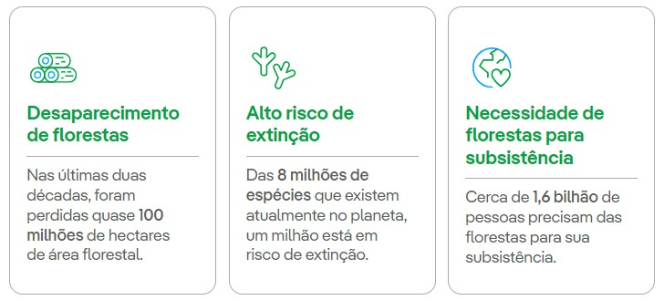
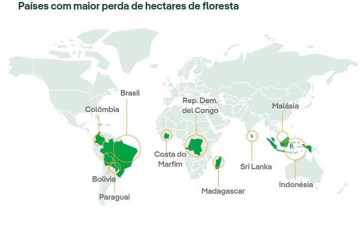

ODS 15: O que é?
O ODS 15 busca proteger, recuperar e promover o uso sustentável dos ecossistemas terrestres, gerir de forma sustentável as florestas, combater a desertificação, deter e reverter a degradação da terra e deter a perda de biodiversidade.
31% da superfície mundial está coberta por florestas, que abrigam mais de 80% de todas as espécies terrestres, tanto de animais quanto de plantas e insetos. Os ecossistemas terrestres também são vitais para a manutenção da vida humana, contribuem para mais da metade do PIB mundial e influenciam diversos valores culturais, espirituais e econômicos. No entanto, de acordo com dados da ONU, quase 100 milhões de hectares de área florestal líquida foram perdidos nas últimas duas décadas
Além disso, a atividade humana, agravada pelo avanço das mudanças climáticas, é a principal causa da degradação da terra, que afeta diretamente o bem-estar de 1,3 bilhão de pessoas. Se a terra continuar a ser empobrecida no mesmo ritmo, haverá mais 1,5 bilhão de hectares de terra degradada até 2030. Para que a meta de 2030 de um mundo neutro em termos de degradação da terra seja alcançada, é necessário não apenas evitar mais deterioração, mas também restaurar pelo menos 1 bilhão de hectares de terras já degradadas.
Com relação à extinção de espécies, é preciso ter em mente que esse é um efeito irreversível. Em nível mundial, o índice da Lista Vermelha — um indicador essencial da saúde da biodiversidade mundial — se deteriorou em 4% entre 2015 e 2023. Isso equivale a 11% nas três décadas desde 1993, com cada década se deteriorando mais rapidamente do que a anterior. Atualmente, 21% das espécies de répteis correm risco de extinção e, das 8 milhões de espécies que existem atualmente no planeta, um milhão está em risco.
Apesar dos esforços para atingir as metas desse objetivo, o Relatório de Acompanhamento dos ODS 2023 da ONU não oferece boas perspectivas e observa que, apesar de algum progresso na gestão sustentável das florestas, nas áreas protegidas e na adoção de valores nacionais de biodiversidade e responsabilidade pelo capital natural, a maioria das melhorias foi modesta.
Reverter essa realidade se converteu em um objetivo primordial em âmbito internacional. Por este motivo, proteger, recuperar e promover o uso sustentável dos ecossistemas terrestres, gerir de forma sustentável as florestas, combater a desertificação, deter e reverter a degradação da terra e deter a perda de biodiversidade é o ODS 15 dos 17 Objetivos de Desenvolvimento Sustentável da ONU, aprovados em setembro de 2015 como parte da Agenda 2030.
 
Metas do ODS 15:
Assegurar a conservação, recuperação e uso sustentável dos ecossistemas terrestres e dos ecossistemas interiores de água doce, em especial florestas, zonas úmidas, montanhas e terras áridas.
Combater a desertificação e promover a restauração das terras e solos degradados.
Assegurar a conservação dos ecossistemas de montanha, incluindo a sua biodiversidade, para melhorar a sua capacidade de proporcionar benefícios que são essenciais para o desenvolvimento sustentável.
Tomar medidas urgentes para acabar com a caça ilegal e o tráfico de espécies da flora e fauna protegidas.